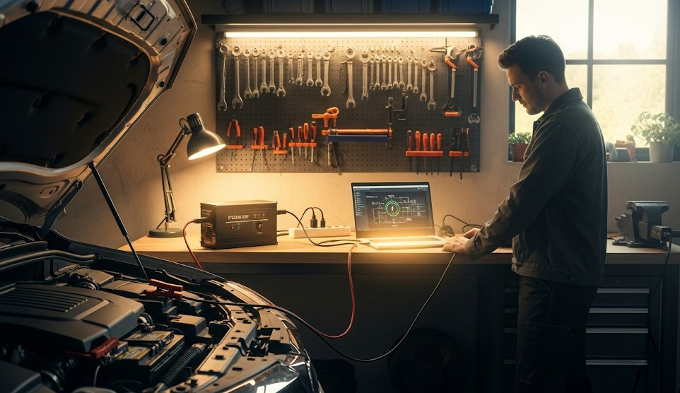

Car as a Power Plant: Inverters & Safety
Objective
Use your car to power small electronics without killing the battery or creating hazards.
Basics
- Use a quality inverter sized to your load (e.g., 150–300 W for chargers).
- Car running during heavy draw; monitor fuel and exhaust safety.
Connection
- 12V socket for small loads; direct‑to‑battery clamps for larger inverters (fused).
Safety
- Keep inverter ventilated; avoid inside‑cabin heat build‑up.
- CO risk: operate outdoors; tailpipe clear.
Real Example
Family kept radios and lights running from a 200 W inverter with the car idling 15 minutes each hour; no dead battery, no CO issues.
Checklist
- Inverter + fuses
- Extension cord
- Power strip
Contingencies
- Fuel low → switch to solar + power bank for phones.
After-Action
Measure actual watt draw of your gear and size the inverter appropriately.
← Previous | All Articles | Next →